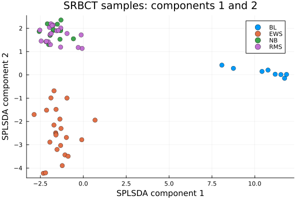
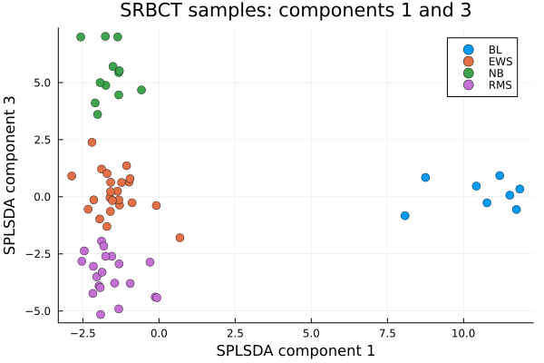
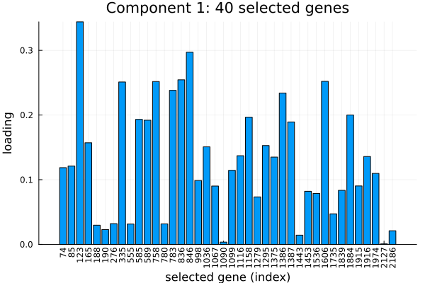
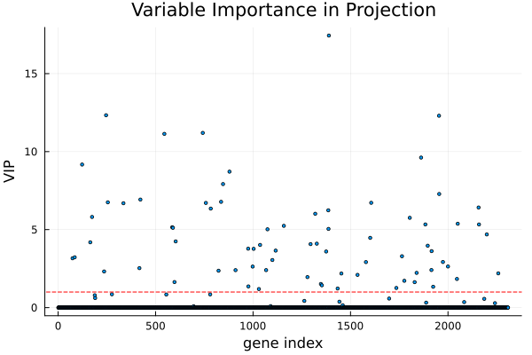

SPLSDA: Sparse PLS Discriminant Analysis
Sparse partial least square discriminant analysis or SPLSDA is, as the name suggests, a supervised classification method which is mainly used on datasets which have more of variables or columns than observations or rows. SPLSDA is a modification of partial least square classification where it adds variable selection, so that each component can separates the classes and is defined by only a small subset of the variables.
In this documentation, we will depomstrate implementation of SPLSDA using BigRiverEssence.splsda on a SRBCT dataset.
The method
Let us consider a vector of classes where the $i$th component indicates the class of the $i$th observation. Let $X$ be a matrix of predictors with variables being the columns and observations being the rows. In SPLSDA, the class labels are first dummy-encoded such that we get an indicator matrix $Y$ from the vector of classes, where $Y_{ik} = 1$ if sample $i$ belongs to class $k$. SPLSDA then performs a sparse PLS regression of the predictors $X$ onto this indicator matrix $Y$.
In SPLSDA, we find each component by obtaining loading vectors $u$ (over variables) and $v$ (over classes) such that we maximize the covariance between the variable side score $Xu$ and the class side score $Yv$ using an $L_1$ penalty applied to $u$. Hence the optimization probem can be written as: $\max_{u,v} \; \operatorname{cov}(Xu, Yv) \quad \text{subject to } \|u\|_2 = \|v\|_2 = 1, \; P_\lambda(u).$ We apply the $L_1$ penalty using only keepX variables for each component. These variables have the largest loadings, the rest are set to $0$. We then solve the component by alternating soft-thresholded power iteration where we update $u$ from the class scores and threshold it. Then we update $v$ from the variable scores — until the loadings converge. We then deflate the variable block $X$ by regressing on its score. We keep $Y$ untouched. We then extract the next component from the residual, we follow Lê Cao, Boitard & Besse (2011).
The result gives, per component, a set of keepX selected variables (the nonzero loadings) and sample scores that separate the classes.
The data
We use the SRBCT dataset from the mixOmics package. The SRBCT (Small Round Blue Cell Tumors) dataset contains expression levels of $2308$ genes on $63$ samples across four tumor classes — Ewing sarcoma (EWS), Burkitt lymphoma (BL), neuroblastoma (NB), and rhabdomyosarcoma (RMS) — from Khan et al. (2001) [1], obtained via the mixOmics R package [2]. The goal is to select a small set of discriminating genes per component that can best discremenate the tumour classes.
using BigRiverEssence, DelimitedFiles, Plots, Statisticsdatadir = joinpath(pkgdir(BigRiverEssence), "reference_Data", "srbctdata")
X = readdlm(joinpath(datadir, "gene.csv"), ',', Float64) # 63 × 2308 gene expression
y = vec(readdlm(joinpath(datadir, "class.csv"), String)) # 63 class labels
size(X), unique(y)((63, 2308), ["EWS", "BL", "NB", "RMS"])Fitting the model
Now we fit splsda to the predictor matrix $X$. We also pass the number of components we want to have as ncomp and the number of variables to have in each of the components as keepX. We fit three components, keeping $40$, $9$, and $40$ genes respectively.
ncomp = 3
keepX = [40, 9, 40]
m = splsda(X, y, ncomp, keepX)
# confirm the sparsity such that each component keeps exactly keepX genes
[count(!iszero, m.loadings_X[:, c]) for c in 1:m.ncomp]3-element Vector{Int64}:
40
9
40The fitted Splsda holds the sample scores (variates_X), the sparse gene loadings (loadings_X), the class labels, and the dummy encoding.
Sample plot
Now we project the samples onto the first two components and color by tumor class. This will show us how the discriminant components separate the types.
V = m.variates_X
scatter(V[:, 1], V[:, 2]; group = y,
xlabel = "SPLSDA component 1", ylabel = "SPLSDA component 2",
title = "SRBCT samples: components 1 and 2", legend = :topright,
markersize = 5, markerstrokewidth = 0.5)
We note from the above plot that components $1$ and $2$ are able to separate the two of the four tumor types as BL is isolated far along component $1$, and EWS forms its own cluster along component $2$. The remaining two classes, NB and RMS, overlap in this plane. They are resolved by the third component, which is why the model was fit with three. It is interesting to see that using only a few dozen genes per component the discriminant directions were able to pull the tumor types apart.
To see the third component resolve NB and RMS, we plot components $1$ and $3$.
scatter(V[:, 1], V[:, 3]; group = y,
xlabel = "SPLSDA component 1", ylabel = "SPLSDA component 3",
title = "SRBCT samples: components 1 and 3", legend = :topright,
markersize = 5, markerstrokewidth = 0.5)
Selected genes
As noted before, in SPLSDA, the loadings of each components are sparse as only keepX genes are nonzero. Plotting those nonzero loadings can show us which genes define a component and with what weight.s. We plot the discriminant weights of the $40$ non zero genes as bar plots.
L1 = m.loadings_X[:, 1]
sel = findall(!iszero, L1) # the 40 genes selected on component 1
bar(L1[sel]; xticks = (1:length(sel), string.(sel)), xrotation = 90,
legend = false, xlabel = "selected gene (index)", ylabel = "loading",
title = "Component 1: $(length(sel)) selected genes")
Variable importance (VIP)
VIP (Variable Importance in Projection) summarizes each gene's contribution across all components into a single score. We compute it as in mixOmics: variables with VIP above $1$ are of above-average importance.
vip_final = vip(m)[:, end] # cross-component VIP
scatter(vip_final; markersize = 2, legend = false,
xlabel = "gene index", ylabel = "VIP",
title = "Variable Importance in Projection")
hline!([1.0], color = :red, linestyle = :dash)
Since the loadings are sparse in SPLSDA, most genes have VIP near $0$. The genes which are selected by the model rise above the baseline. The ones above the dashed line at VIP = $1$ are the most influential across the three components.
Summary
In this example, we used a dataset with $63$ samples and $2308$ genes. The splsda model we fitted built three sparse components that separate the four tumor types while selecting only $40$, $9$, and $40$ genes. splsda can be used in any such dataset where the goal is discriminent analysis and the number of predictor variables exceeds the number of rows.
References
[1] Khan, J., Wei, J. S., Ringnér, M., et al. (2001). Classification and diagnostic prediction of cancers using gene expression profiling and artificial neural networks. Nature Medicine, 7(6), 673–679.
[2] Rohart, F., Gautier, B., Singh, A., & Lê Cao, K.-A. (2017). mixOmics: An R package for 'omics feature selection and multiple data integration. PLoS Computational Biology, 13(11), e1005752.